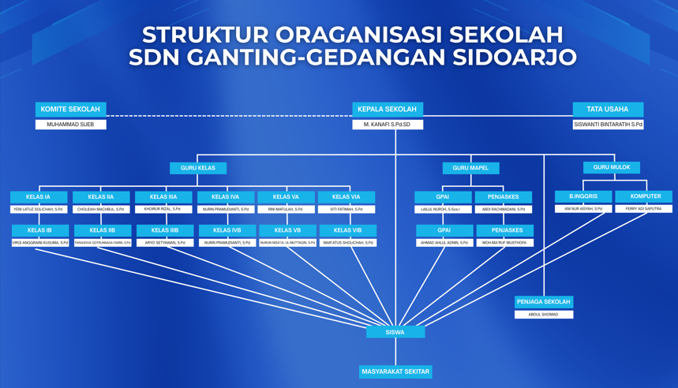

Sejarah Singkat
SD Negeri Ganting didirikan dengan semangat untuk memberikan pendidikan berkualitas yang berlandaskan nilai-nilai karakter dan budi pekerti luhur. Berawal dari bangunan sederhana, kini sekolah telah berkembang menjadi institusi pendidikan yang memiliki fasilitas lengkap dan modern.
Dalam perjalanannya selama puluhan tahun, sekolah ini telah mencetak ribuan alumni yang tersebar di berbagai profesi dan berkontribusi positif bagi masyarakat. Komitmen kami adalah terus mengembangkan kualitas pendidikan dengan mengintegrasikan kurikulum nasional dan nilai-nilai kearifan lokal.
Visi Kami
"Menjadi lembaga pendidikan yang unggul, santun, berprestasi, berstandar nasional dan berwawasan lingkungan."
Misi Kami
Mewujudkan lulusan yang kompeten dalam sikap, pengetahuan dan keterampilan.
Mencetak lulusan yang unggul dalam sikap kebangsaan dan karakter disiplin.
Mewujudkan kurikulum mandiri dengan mengacu pada standar nasional pendidikan.
Meningkatkan pengembangan dan pengelolaan ICT yang menunjang pembelajaran digital.
Struktur Organisasi

Fasilitas Sekolah
Sarana prasarana terbaik untuk mendukung tumbuh kembang siswa.

Ruang Kelas
Setiap ruang kelas dilengkapi dengan proyektor LCD dan akses internet untuk mendukung pembelajaran interaktif.

Lab Komputer
Fasilitas komputer modern untuk menunjang literasi digital dan kegiatan ujian berbasis komputer.

Perpustakaan
Koleksi buku lengkap disertai pojok baca yang nyaman untuk menumbuhkan minat literasi siswa.

Panggung Pentas
Panggung pertunjukan yang nyaman untuk kegiatan seni dan budaya siswa.

UKS
Fasilitas kesehatan siswa yang menyediakan layanan medis dasar dan pendidikan kesehatan.

Musholla
Fasilitas ibadah yang nyaman untuk kegiatan keagamaan siswa.

Sanggar Pramuka
Fasilitas untuk kegiatan pramuka yang membantu pengembangan karakter siswa.

Lapangan
Lapangan serbaguna yang luas untuk olahraga, upacara, dan pengembangan bakat.